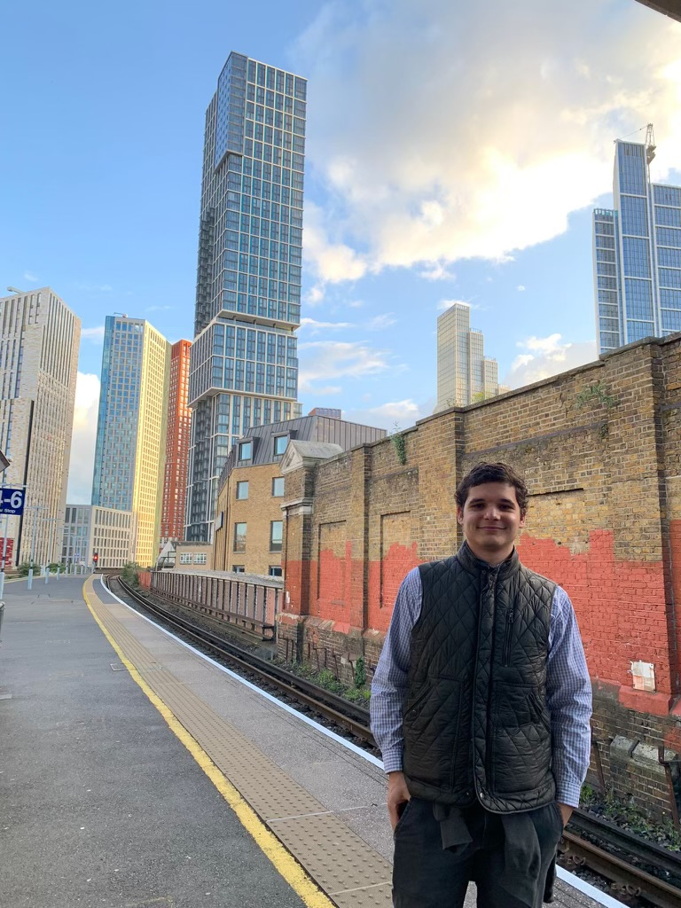

Hello! I'm
Marcos Echevarria-Eirea
PhD Student at UNC-Chapel Hill


Hello! I'm
PhD Student at UNC-Chapel Hill
I am a PhD student at the Department of Political Science at the University of North Carolina at Chapel Hill. Prior to joining UNC, I received my MSc in Political Science from the London School of Economics and Political Science (LSE) in 2023. I also hold a BA in Politics with Economics from Loughborough University.
My research focuses on political behaviour, public opinion, and political parties from a comparative perspective, and to a lesser degree, political methodology. In particular, I am interested in social media network models that uncover the possible effect of intergroup contact on collective identities.
I also work as a Research Assistant at the Chapel Hill Expert Survey (CHES) and as Teaching Assistant for Introduction to Comparative Politics at UNC.
Other interests and hobbies of mine are: